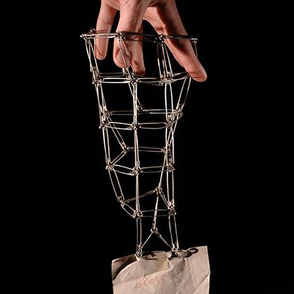
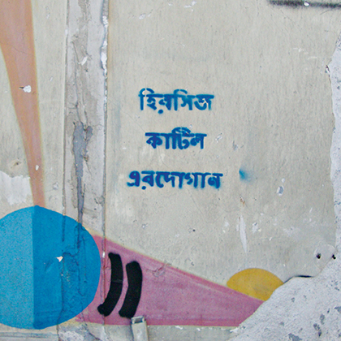
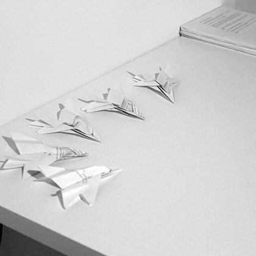
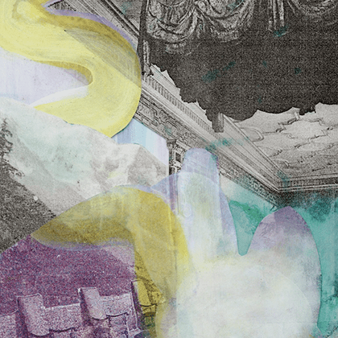

Nikolay Alutin
independent curator and writer
Projects
About
Synthetic Types
Performance
Stedelijk Museum Amsterdam, 2019

Landscape with Bear
Exhibition
De Appel Amsterdam, 2019
Survival Kit pt.2
Exhibition & Publication
Cultural Transit Foundation, 2017

Survival Kit pt.1
Exhibition
Space Debris Istanbul, 2017

Ohne prickelnd, sanft
Publication
Spike Art Berlin, 2017

Inside Art
Exhibition
Pushkin State Museum of Fine Arts, 2016